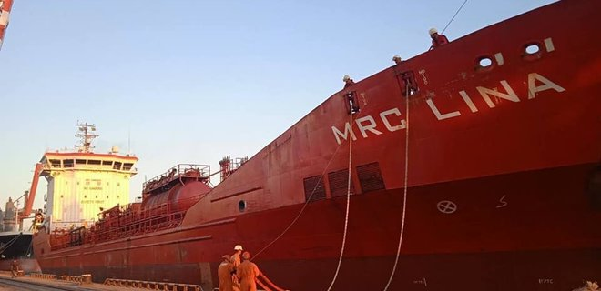
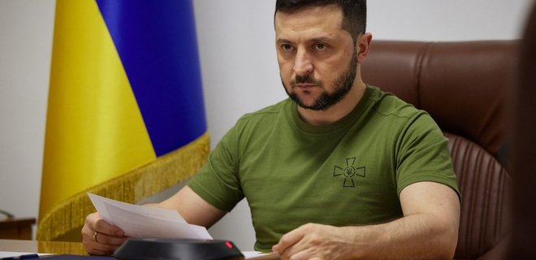

Главные новости
Вторжение. Авиация и артиллерия "прошлись" по россиянам на юге, ПВО сбила ракеты у Днепра
"Результат нужно закреплять" – Минобороны о том, почему не спешит с информацией с фронта
Четыре главные новости Украины и мира на 19:00 4 сентября

1. Россия ночью обстреляла Никополь, Харьков, Николаев и Славянск.
Ночь с 3 на 4 сентября выдалась "горячей" для ряда населенных пунктов, местные власти рассказали об обстрелах и
последствиях (подробнее).
2. Россия ударила по Украине десятью ракетами, ПВО сбила две.
С начала суток противник осуществил обстрел Украины ракетами разных типов воздушного и наземного базирования:
это были управляемые авиационные ракеты Х-59, Х-31, противокорабельные П-800 "Оникс", крылатые ракеты
"Искандер-К" (подробнее).
3. У Зеленского показали видео обстрела Зеленодольска: погиб мальчик, гулявший в сквере.
Российские военные в субботу, 3 сентября, из ракетной системы залпового огня "Ураган" дважды обстреляли
Зеленодольскую общину в Днепропетровской области. В Офисе президента показали эти кадры (подробнее).
4. Из Украины вышел самый большой караван судов в рамках зернового коридора.
В общей сложности 13 судов перевозят 282 500 тонн украинской агропродукции, которая направляется в восемь стран
мира (подробнее).
Читайте также текст дня:
"Властелин колец: Кольца власти" – что не так с самой ожидаемой премьерой сентябряПять главных новостей Украины и мира на 19:00 21 августа
- РОССИЯ ВВЕЛА САНКЦИИ ПРОТИВ КУЛЕБЫ, ДАНИЛОВА И ДЕНИСОВОЙ.
Россия ввела санкции против главы МИД Дмитрия Кулебы, секретаря СНБО Алексея Данилова, омбудсмена Людмилы Денисовой и еще 70 украинцев (подробнее). - В ПРИЛОЖЕНИИ ДИЯ ПОЯВИЛИСЬ COVID-СЕРТИФИКАТЫ.
В приложении можно получить как внутренний, так и внешний COVID-сертификат (подробнее). - ВОЕННЫЙ САМОЛЕТ С УКРАИНЦАМИ ВЫЛЕТЕЛ ИЗ КАБУЛА – ГЕНШТАБ.
Количество эвакуированных граждан и время возвращения в Украину уточняется (подробнее). - ЗЕЛЕНСКИЙ ВВЕЛ В ДЕЙСТВИЕ САНКЦИИ ПРОТИВ ШАРИЯ И ГУЖВЫ. ИХ САЙТЫ ДОЛЖНЫ БЫТЬ
ЗАБЛОКИРОВАНЫ.
Президент Владимир Зеленский ввел в действие санкции Совета нацбезопасности и обороны против Анатолия Шария и Игоря Гужвы (подробнее). - В УКРАИНУ ЕДЕТ ЗАМЕСТИТЕЛЬ ГЕНЕРАЛЬНОГО СЕКРЕТАРЯ НАТО.
23-24 августа Украину посетит заместитель генерального секретаря НАТО Мирча Джоанэ. Он примет участие в саммите Крымской платформы и праздновании 30-летия Независимости Украины (подробнее).
Зеленский провел третье за неделю заседание Ставки: Украинские флаги возвращаются
Цей матеріал також доступний українською
Владимир Зеленский (Фото - пресс-служба Офиса президента)
Президент Владимир Зеленский провел в воскресенье, 4 сентября, очередное заседание Ставки верховного главнокомандующего. Об этом сообщает пресс-служба Офиса президента.
Читайте нас в Telegram: только важные и проверенные новостиВоенное командование и разведка доложили о ситуации на передовой. "Выходных на войне нет. Держим постоянную связь с теми, кто на фронте. Подробности не буду рассказывать, но украинские флаги возвращаются туда, где должны быть по праву. А оккупантам на нашей земле не место", – заявил Зеленский по результатам заседания Ставки. Во встрече приняли участие секретарь Совета нацбезопасности и обороны Алексей Данилов, министр обороны Алексей Резников и его заместитель Ростислав Замлинский, главнокомандующий ВСУ Валерий Залужный, начальник Генштаба Сергей Шаптала, командующий Нацгвардией Юрий Лебедь, министр внутренних дел Денис Монастырский, министр инфраструктуры Александр Кубраков, замглавы Офиса президента Роман Машовец. По видео к заседанию Ставки присоединились начальник Главного управления разведки Кирилл Буданов, командующий Сухопутными войсками Александр Сырский, командующий ОК "Юг" Андрей Ковальчук и командующий ОК "Запад" Сергей Литвинов.
- 16 августа Зеленский изменил состав Ставки верховного главнокомандующего.
- 31 августа Зеленский провел заседание Ставки, после которого поблагодарил от имени разведки украинцев, которые "очень крепко нас поддерживают на юге нашего государства, особенно в Крыму".
- 2 сентября Зеленский в видеообращении сообщил, что провел заседание Ставки верховного главнокомандующего, сказал, что "решения увидим все".
Популярное
- Запорожская АЭС. Сотрудница станции анонимно рассказала CNN об условиях работы в оккупации
- Квантовая угроза и арктическое вино. Лучшие истории мира от LIGA.net
- Глава МАГАТЭ дал предварительную оценку ситуации на Запорожской АЭС
- "Мы что-то увидели, но мы не совсем понимаем, что" – Подоляк о визите
- Украинский "Бук" сбил российский самолет без единой ракеты –